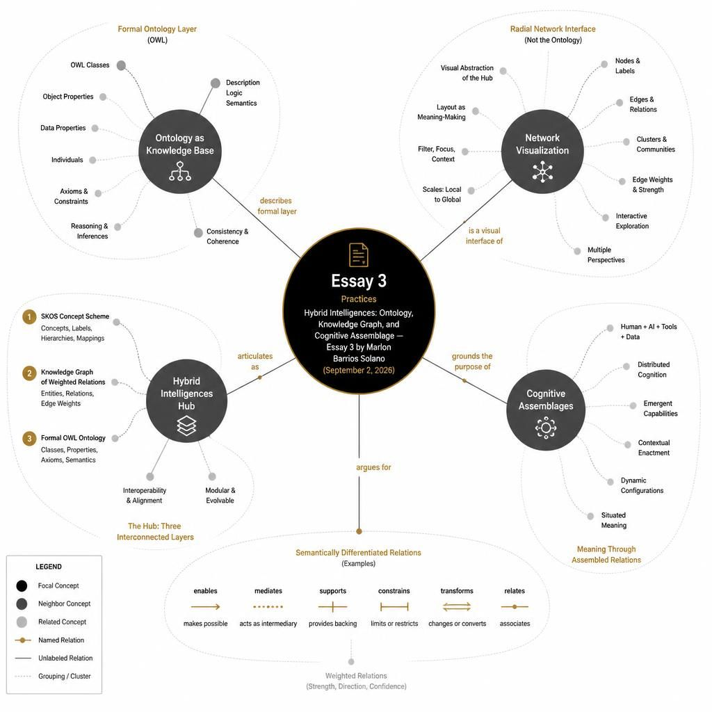

In Hybrid Intelligences, I am developing an evolving knowledge architecture that combines a computational ontology, a knowledge graph, artistic research, network visualization, and generative AI interfaces. Together, these components form an experimental cognitive assemblage through which I investigate intelligence as coupling across bodies, technologies, institutions, environments, and worlds.
I use the term ontology deliberately. In knowledge representation and artificial intelligence, an ontology is not simply a collection of keywords, concepts, or visualizations. It provides a formal and machine-readable way of specifying entities and concepts within a domain, their categories, properties, and relationships.
The Hybrid Intelligences Hub currently contains 238 concepts and 2,379 weighted relationships. One hundred two of those relationships are also typed: directed verbs such as couples with, enables, mediates, and proposes, published in the Views and in the machine-readable ontology. The concepts and relationships are not only displayed through a visualization; I also represent them through Semantic Web and knowledge-representation standards, including SKOS, JSON-LD, RDF/Turtle, and OWL.
The project publishes several machine-readable representations of this knowledge architecture:
- ontology.jsonld
- ontology.ttl
- ontology.owl.ttl
Within the OWL representation, I define hi:Concept as a superclass and organize concepts through classes such as:
- hi:ProgramConcept
- hi:OrganizationConcept
- hi:PremiseConcept
- hi:ParticipantConcept
- hi:BackgroundConcept
- hi:FacilitatorConcept
- hi:PracticeConcept
- hi:TensionConcept
- hi:QualityConcept
- hi:PhenomenonConcept
- hi:DomainConcept
- hi:FrameworkConcept
- hi:AuthorConcept
The OWL layer also defines object properties. `hi:relatedTo` remains the general, weighted association. Thirteen directed verbs are declared as `rdfs:subPropertyOf hi:relatedTo`:
- hi:couplesWith
- hi:enables
- hi:mediates
- hi:cultivates
- hi:constrains
- hi:participatesIn
- hi:critiques
- hi:proposes
- hi:instantiates
- hi:develops
- hi:enacts
- hi:embodies
- hi:emergesFrom
I also define datatype properties, domains, ranges, subclasses, and individuals. In this sense, the project goes beyond producing a visualization of interconnected ideas. I am engaging directly with practices of ontology engineering and computational knowledge representation.
Three interconnected layers
I understand the current architecture of Hybrid Intelligences as operating across three interconnected layers: a concept scheme or knowledge organization system, a knowledge graph, and a formal ontology.
At the level of knowledge organization, I use SKOS structures such as skos:ConceptScheme, skos:prefLabel, skos:definition, skos:broader, skos:inScheme, and skos:topConceptOf. These allow me to define concepts, descriptions, categories, and conceptual hierarchies in a structured and machine-readable form.
At the level of the knowledge graph, I instantiate hundreds of concepts and connect them through thousands of relationships. Visualization is therefore not the ontology itself. It is a family of visual and navigational interfaces into the same knowledge architecture, gathered under Views. The Hub currently publishes five pictures of that graph:
- Radial network — what is near what. Concepts sit on concentric rings by category; edge thickness is weighted relatedness. Isolate a ring or a typed verb. This is the first map; the others start from it.
- Ring chord — which categories couple with which. Thirteen arcs; ribbon volume is relatedTo between rings. The node graph is soup; this 13×13 map is readable.
- Hive — authors, conceptual models, and practices on three axes. A trail such as Maturana → Autopoiesis → Enactivism becomes a line, not a highlight in the soup.
- Layered DAG — one typed verb at a time, left to right. Sources sit left of what they act on. Direction becomes visible.
- Path walker — one coupling trail. Pedagogical, not a map: body couples with AI; AI mediates cognition. The same sentences Voice already speaks.
Each asks a different question of the same scheme. The radial network remains the first map — the one the others start from — but it is no longer the only way to see the graph.
The OWL layer extends this further by formally defining classes, subclasses, object properties, datatype properties, domains, ranges, and individuals. This is where Hybrid Intelligences becomes an ontology in the stronger sense associated with Semantic Web technologies and computational knowledge representation.
I therefore understand the architecture approximately as:
- Ontology → Knowledge Graph → Interfaces
But the actual research process is recursive rather than linear:
- Essays + artistic research → Ontology → Knowledge Graph → Views / Voice / Image / Mini-pod / Enact → New research → Ontology
The system continually feeds back into itself.
From associations to semantic relationships
Many of the relationships still operate through a general formulation of relatedness plus relational weight. That substrate remains: thousands of `relatedTo` edges whose thickness is strength. It has been useful for constructing and navigating the network. I have now also begun to ask not only whether two concepts are connected, but how they are connected.
The general association is still:
- Embodiment → relatedTo → Cognition
On top of it the graph now carries a seed of semantically differentiated, directed relationships — one hundred two assertions using the thirteen verbs named above. They are visible in the radial network (a Relations filter, combinable with a category ring), in the ontology browser, in the hive, the layered DAG, and the path walker, and as OWL object-property assertions such as hi:body hi:couplesWith hi:ai.
Examples now asserted in the Hub:
- body → couples with → artificial intelligence
- embodiment → enables → cognition
- LLM → mediates → cognition
- somatics → cultivates → literacies
- CAME → constrains → creativity
- conversational AI → participates in → Hybrid Intelligences Hub
- hybrid intelligences → critiques → techno-dualism
- Hayles → proposes → cognitive assemblages
- Maturana and Varela → propose → autopoiesis
- Marlon Barrios Solano → proposes → Essay 1, Essay 2, Essay 3
- network visualization → instantiates → assemblage
- Essay 3 → develops → ontology as knowledge base
- Enact → enacts → coupling
- body → embodies → cognition
- intelligence → emerges from → coupling
Most edges remain untyped association. The seed is small on purpose. I am not pretending that every proximity is already a differentiated verb.
This shifts the research question from:
What concepts are connected?
toward:
What kinds of relationships produce the assemblage?
That question is no longer only prospective. It is now a working layer of the knowledge architecture — still thin, still growing, already inspectable.
Questioning fixed categories
This development also raises a productive problem within the ontology itself.
Some of the current top-level categories are represented as mutually disjoint classes. I am interested in reconsidering this structure because the theoretical proposition of Hybrid Intelligences challenges precisely this kind of rigid separation.
A practice might simultaneously function as a framework. An artwork might be a practice, an experiment, a conceptual model, and part of a program. A person might simultaneously operate as an author, participant, facilitator, artist, and researcher.
Rather than seeing this ambiguity as something that needs to be eliminated from the ontology, I am interested in treating it as a research problem.
This leads to a central question:
What would an ontology of cognitive assemblages look like if entities were allowed to occupy multiple functional positions simultaneously?
For me, this question connects the technical construction of the ontology directly with the philosophical and artistic research of Hybrid Intelligences.
Ontology and generative AI
The ontology also performs a specific function in relation to generative AI.
I do not understand it as training or fine-tuning a large language model unless model weights are actually being modified. Instead, the ontology provides a structured knowledge and epistemic context for the language model.
The conversational AI within the Hub is therefore grounded in the Hybrid Intelligences ontology and research framework.
This distinction is important because an ontology and a large language model organize knowledge differently.
An LLM operates through distributed statistical representations learned from very large quantities of language. The ontology allows me to make particular conceptual and epistemic commitments explicit:
- These are the entities I consider relevant.
- These are their definitions.
- These are the categories I am proposing.
- These are the relationships I consider meaningful.
The language model contributes something different: linguistic flexibility, interpretation, conversation, recombination, and generativity.
The resulting assemblage can be understood as:
- formal and semi-formal knowledge structures + probabilistic language models + human interaction + embodied practices + artistic research
This is where the technical architecture of the project intersects with its larger conceptual proposition.
I am not proposing that the AI itself is the intelligence.
The ontology is not the intelligence.
The human is not the intelligence.
The network is not the intelligence.
Intelligence emerges through their coupling.
This is the central proposition I am testing through Hybrid Intelligences.
The Hub as an experimental cognitive assemblage
I therefore describe Hybrid Intelligences as an evolving knowledge architecture combining a computational ontology, knowledge graph, artistic research, visualization, and generative AI interfaces. Together, these components form an experimental cognitive assemblage for investigating intelligence as coupling across bodies, tools, technologies, institutions, environments, and worlds.
The different components of the Hub—Ontology, Views (radial network, ring chord, hive, layered DAG, path walker), Voice, Image, Mini-pod, Enact, essays, and artistic works—are not separate tools. They are different modes for entering and activating the same evolving knowledge ecology.
Writing feeds the ontology.
The ontology reorganizes the Views.
The Views and the ontology ground conversations.
Concepts become images, voices, audio, and embodied prompts.
Artistic practice enters the assemblage and generates new questions.
Those questions return to the research and potentially transform the ontology.
For this reason, I see the next stage of Hybrid Intelligences not simply as expanding the number of concepts or adding new AI features. Relations such as couples with, enables, mediates, cultivates, constrains, participates in, critiques, proposes, instantiates, develops, enacts, embodies, and emerges from are now first-class components of the knowledge architecture. What remains is to grow that seed, to let more of the graph speak in verbs, and to keep asking whether entities may occupy more than one functional position at once.
This makes the ontology itself part of my artistic and epistemological research.
Hybrid Intelligences is therefore not simply a project about hybrid intelligence. The architecture, the AI systems, the ontology, my artistic practice, its users, and the institutions within which it develops participate in producing the cognitive assemblage that the project is attempting to understand.
Perhaps the Hub is not simply about Hybrid Intelligences.
It is an experiment in becoming one.
References
- Bender, Emily M., Timnit Gebru, Angelina McMillan-Major, and Margaret Mitchell. “On the Dangers of Stochastic Parrots: Can Language Models Be Too Big?” In Proceedings of the 2021 ACM Conference on Fairness, Accountability, and Transparency, 610–623. 2021.
- Berners-Lee, Tim, James Hendler, and Ora Lassila. “The Semantic Web.” Scientific American 284, no. 5 (2001): 34–43.
- Clark, Andy. Supersizing the Mind: Embodiment, Action, and Cognitive Extension. Oxford: Oxford University Press, 2008.
- Clark, Andy, and David J. Chalmers. “The Extended Mind.” Analysis 58, no. 1 (1998): 7–19.
- Deleuze, Gilles, and Félix Guattari. A Thousand Plateaus: Capitalism and Schizophrenia. Translated by Brian Massumi. Minneapolis: University of Minnesota Press, 1987.
- Gruber, Thomas R. “A Translation Approach to Portable Ontology Specifications.” Knowledge Acquisition 5, no. 2 (1993): 199–220.
- Guarino, Nicola, Daniel Oberle, and Steffen Staab. “What Is an Ontology?” In Handbook on Ontologies, edited by Steffen Staab and Rudi Studer, 1–17. Berlin: Springer, 2009.
- Hayles, N. Katherine. Bacteria to AI: Human Futures with Our Nonhuman Symbionts. Chicago: University of Chicago Press, 2025.
- Hayles, N. Katherine. How We Became Posthuman: Virtual Bodies in Cybernetics, Literature, and Informatics. Chicago: University of Chicago Press, 1999.
- Hayles, N. Katherine. Unthought: The Power of the Cognitive Nonconscious. Chicago: University of Chicago Press, 2017.
- Hogan, Aidan, et al. “Knowledge Graphs.” ACM Computing Surveys 54, no. 4 (2021): Article 71.
- Hutchins, Edwin. Cognition in the Wild. Cambridge, MA: MIT Press, 1995.
- Lewis, Patrick, et al. “Retrieval-Augmented Generation for Knowledge-Intensive NLP Tasks.” Advances in Neural Information Processing Systems 33 (2020): 9459–9474.
- Noy, Natalya F., and Deborah L. McGuinness. Ontology Development 101: A Guide to Creating Your First Ontology. Stanford Knowledge Systems Laboratory Technical Report KSL-01-05, 2001.
- Simondon, Gilbert. On the Mode of Existence of Technical Objects. Translated by Cecile Malaspina and John Rogove. Minneapolis: Univocal Publishing, 2017.
- World Wide Web Consortium (W3C). OWL 2 Web Ontology Language Document Overview. W3C Recommendation, December 11, 2012.
- World Wide Web Consortium (W3C). SKOS Simple Knowledge Organization System Reference. W3C Recommendation, August 18, 2009.